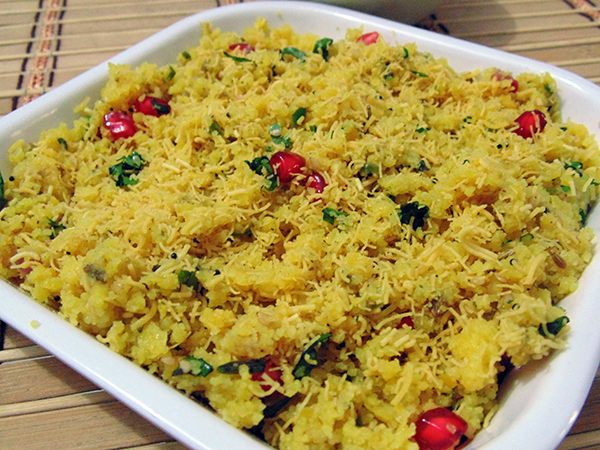

Sev Khamani

Prep Time: 5 hours, 15 minutes
Cook Time: 30 minutes
Total Time: 5 hours, 45 minutes
Ingredients
250 gm Chana dal
250 gm Sev
For Seasoning
2 tsp Oil
½ tsp Mustard seeds
2 tsp Ginger–Chili paste
1 tsp Lemon juice
½ tbsp Coriander seeds
Salt to taste
2 tbsp Pomegranate
1 tbsp Coriander leaves
Water according to requirement
Instructions
Soak chana dal for 5-6 hour
Soak chana dal for 5-6 hour and drain water from it.
Grind coarsely.
Now take in a steel tied container and cook for 2-3 whistle in cooker.
Now heat oil in a pan at slow flame.
Add mustard seeds in it.
When it is spluttering, add ginger chili paste, salt, sugar and lemon juice in it.
Stir well for 10-15 minutes and cook till oil is separated.
Now keep in a dish and garnish with Sev, coriander leaves and pomegranate.